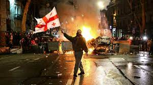

El partido gobernante decide retirar definitivamente una medida inspirada en la legislación rusa para controlar a medios y ONG. La oposición desconfía y mantiene las manifestaciones Dos jornadas de manifestaciones masivas y las críticas de la Unión Europea han echado por tierra el intento del primer partido de Georgia, Sueño Georgiano, de aprobar una ley inspirada en la legislación rusa para amordazar a medios de comunicación y organizaciones no gubernamentales.
